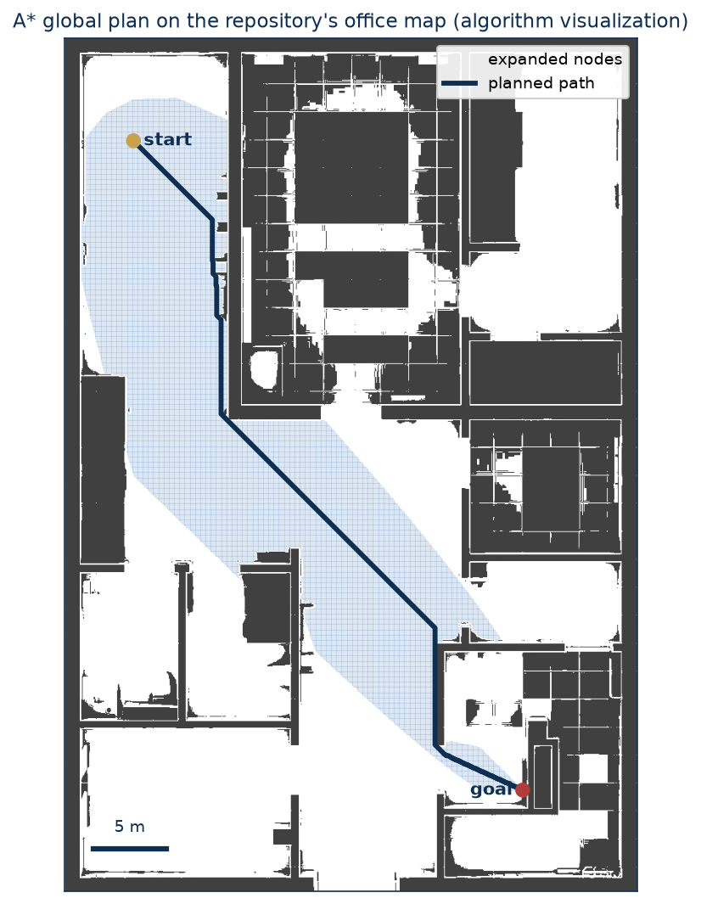
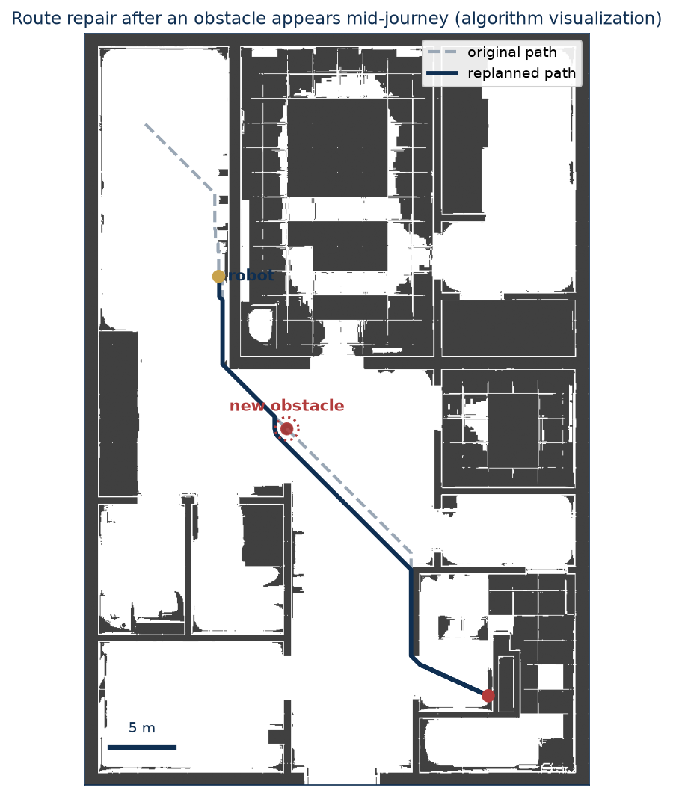
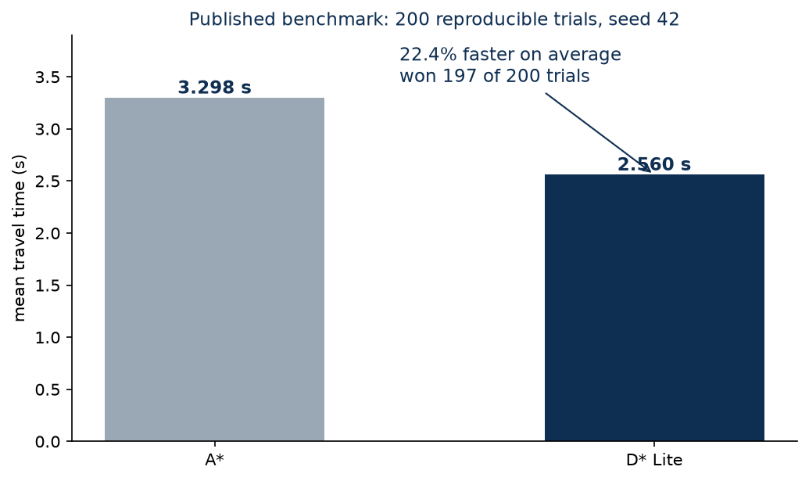

Two global planner plugins for ROS2 Nav2, written in modern C++20: classic A* and incremental D* Lite, benchmarked head-to-head in an office full of moving people.
trials won by D* Lite (seed 42, fully reproducible)
8
moving people in the simulated office world
The problem
Warehouses, hospitals, and homes never hold still. A robot plans a route, someone steps into it, and the plan is suddenly wrong. Classic A* handles this by throwing everything away and searching again from scratch, which costs processing spikes and jerky motion exactly when smoothness matters most. D* Lite takes the other road: it repairs the existing plan incrementally, reusing everything the previous search already learned.
This project turns that textbook comparison into running code: two real Nav2 global planner plugins, one launch-file switch between them, and a benchmark node that settles the question with numbers instead of intuition.
What the planner sees

A real A* run on the project's 50 m × 40 m office map. The blue cloud is every node the search expanded on its way to the goal; the navy line is the resulting path. Algorithm visualization, generated from the repository's actual occupancy map.

Mid-journey, an obstacle appears directly on the route. The planner repairs the path around it. This event, repeated with 8 walking actors, is exactly what the 200-trial benchmark measures.
The results

200 trials, fixed seed, identical conditions for both planners. D* Lite averaged 2.560 s against A*'s 3.298 s and won 197 of 200 runs. The full CSV ships with the repository, and one launch command reproduces the entire benchmark.
The engineering details that make the comparison fair: both planners run as genuine pluginlib Nav2 plugins against the same costmaps, dynamic obstacles are injected identically via MarkerArray, and the benchmark node fixes its random seed so every trial sequence is repeatable to the run.
Under the hood
Modern C++20 implementations of A* and D* Lite as Nav2 global planner plugins
Gazebo world with 8 walking actors for live, visual replanning demos in RViz
Single-parameter planner switching; production-grade launch files and configs
Benchmark node with CSV output: 200 reproducible trials in about 2 minutes
Protective-stop safety guarantees around every replan